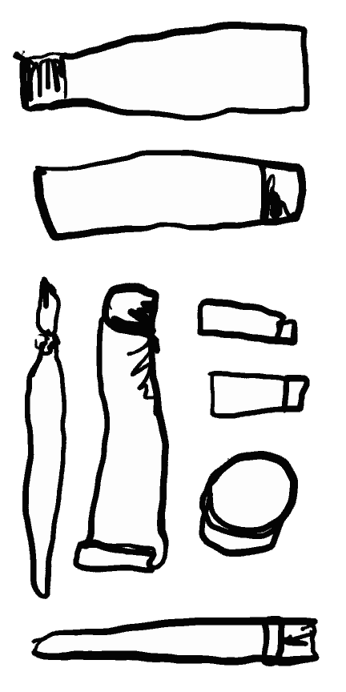
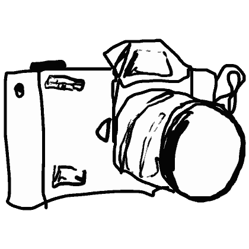
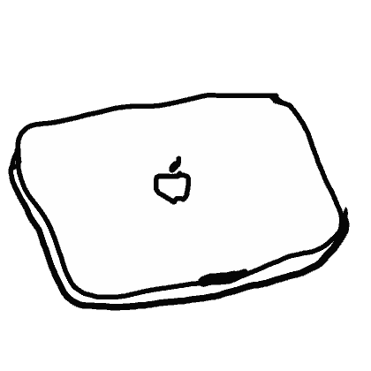
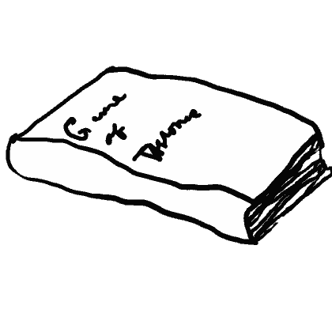
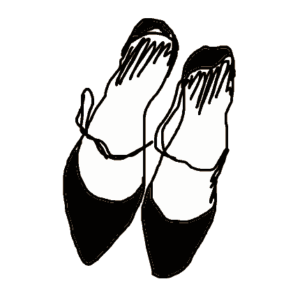
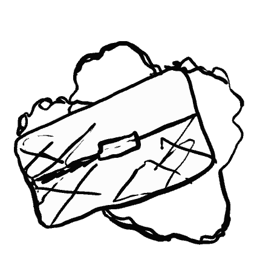
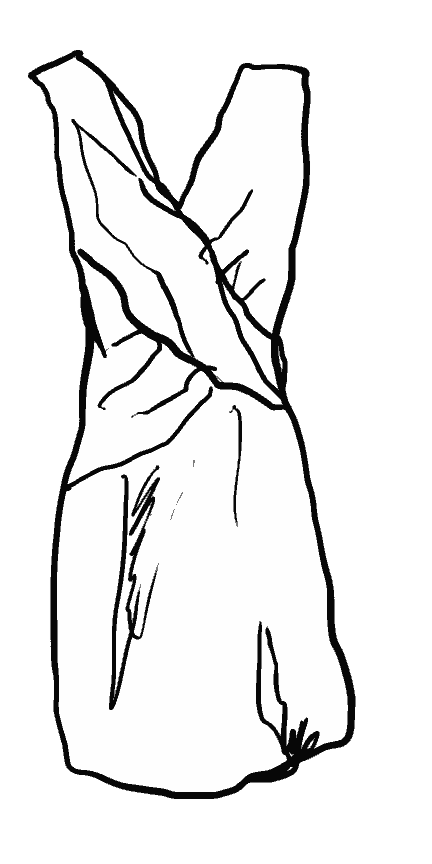
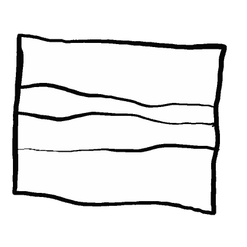
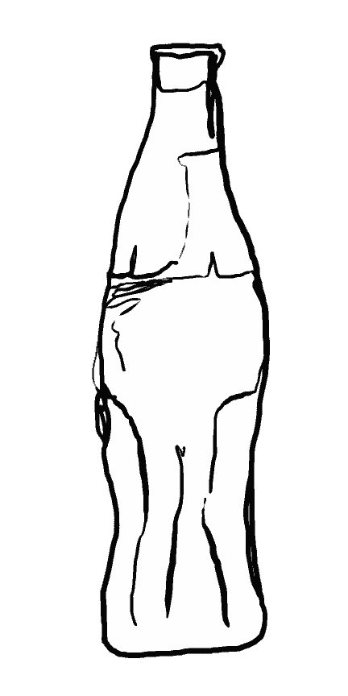

Tina has a very neat room. She doesn't have a lot of "stuff". What she has, she uses. This particular collection that can be found in her room is a collection of the few things that she has that she does not regularly use but wishes she did. She owns high heels that she would like to wear. Paints that she would like to use. She has a film 35mm camera that she knows how to operate, but does not use it as frequently as she would like to. There is an old and broken laptop under her bed which she has been meaning to take to the store to be restored for a while. This is a book that ideally she'd be able to get around to reading. A purse she would like to use. A dress she would like to wear. There is a print of a photo that she would like to put in a frame on the wall. Lastly, she has an old coke bottle that she saved so that she could keep flowers in the bottle. Tina has a very neat room. She doesn't have a lot of "stuff". What she has, she uses. This particular collection that can be found in her room is a collection of the few things that she has that she does not regularly use but wishes she did. She owns high heels that she would like to wear. Paints that she would like to use. She has a film 35mm camera that she knows how to operate, but does not use it as frequently as she would like to. There is an old and broken laptop under her bed which she has been meaning to take to the store to be restored for a while. This is a book that ideally she'd be able to get around to reading. A purse she would like to use. A dress she would like to wear. There is a print of a photo that she would like to put in a frame on the wall. Lastly, she has an old coke bottle that she saved so that she could keep flowers in the bottle. Tina has a very neat room. She doesn't have a lot of "stuff". What she has, she uses. This particular collection that can be found in her room is a collection of the few things that she has that she does not regularly use but wishes she did. She owns high heels that she would like to wear. Paints that she would like to use. She has a film 35mm camera that she knows how to operate, but does not use it as frequently as she would like to. There is an old and broken laptop under her bed which she has been meaning to take to the store to be restored for a while. This is a book that ideally she'd be able to get around to reading. A purse she would like to use. A dress she would like to wear. There is a print of a photo that she would like to put in a frame on the wall. Lastly, she has an old coke bottle that she saved so that she could keep flowers in the bottle.








